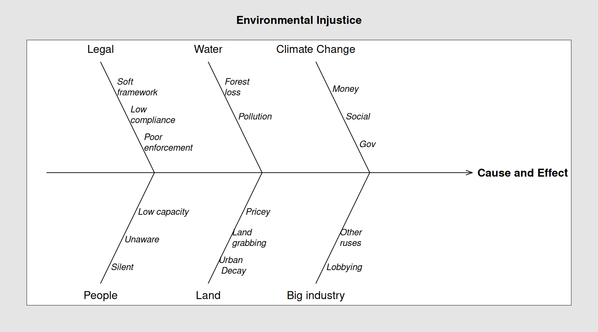
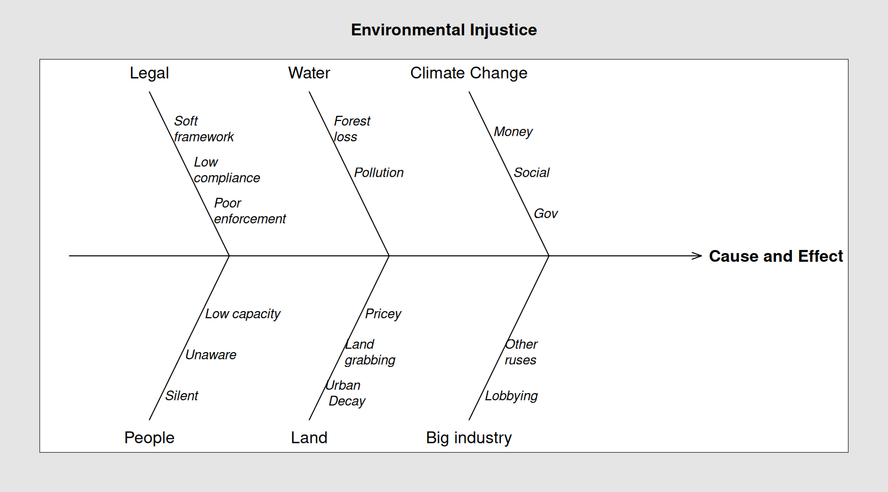

#> Package 'qcc' version 2.7#> Type 'citation("qcc")' for citing this R package in publications.
Is the fair treatment and meaningful involvement of all people, regardless of race, color, national origin or income, with respect to the development, implementation, and enforcement of environmental laws, regulations and policies.
People of a community who are deprived of the right to a clean and healthy environment, the right to clean and healthy air, the right to clean and healthy water, the right and clean and healthy soil, the right to environmental protection and the right to balanced biodiversity are being discriminated against. Are victims of environmental injustice.
While the above ‘new’ rights are not yet totally codified in international treaties they are very evident in customary international law that protects spaces from environmental degradation. Using the Lambeau Movement For Environmental Justice it is my sincere wish and to have Environment Tobago follow in the footsteps of those who’ve won, who have righted environmental injustice where it matters most.. the poor the down-trodden the unhappy masses….(violins, harps and maidensong)
The diagram beneath, predicated on the rant above, posits some factors on which injustice (in the context of ‘natural environment’) feeds.
Code insertions are intended to provide a quick look at the backend of the diagram. They are left there in this version of this worksite. Worry not they be harmless to you but useful to me
#> Package 'qcc' version 2.7#> Type 'citation("qcc")' for citing this R package in publications.
Let’s expand on the terms used in the above diagram.
The THA Act is subsumed under the laws of national legislation. As concerns the Feb 7th oil spill, the legal framework is: Health [issues] are the business of the Assembly and National Security [issues] are under direct ambit of central government.
We could argue that the spill poses a real threat to the Tobago public - providing measurable impact to; homeowner rights to enjoy clean air, fisherfolk rights to derive a livelihood from coastal resources and the public’s right to the Lambeau beach. There will be other groups that were impacted so the exhaustive list has to be generated by consultation with the community and stakeholders wherever found. This means pressing litigation against the THA. It also mean proving any arguments we make.
We’d want to argue the event could have been forestalled had the coast guard been doing their work. As the Prime Minister the Hon. Keith Rowley is on record as admitting the TTCG is having vessel issues. We could also make a case that State is in dereliction of duty. For which we use satellite tracking data that ‘put’ the leaking barge off Trinidad but well within our waters prior to dropping in at Cove.
The core argument is that the disaster could have been prevented had State’s resources functioned when tested in early February. As it turned out Coast Guard, posh radar systems and even calls from ordinary fishermen proved useless to the cause of the citizenry.
Hydrocarbon compromised seawater systems that is, Tobago coastal waters from Cove Point to Scarborough threatens the resilience of the SE coast. While we not be able to argue this aspect as anyone’s culpability (except the captain and the owner of the tow) we’d want to document the spill related damage to this zone to substantiate a ‘loss’ argument.
As shown in the diagram, compromised resiliency is exacerbated by pollution. Deforestation in context is loss of mangrove.
A weakened people are prime candidates for environmental injustice. Resiliency (of a people) is hard to gauge but if a population is silenced or unable to give voice, or is ignorant of issues that affect their well-being the end result is low capacity to grow or in some cases even survive.
The rapid shift in climate norms is causing land loss (due to sea level rise, storms and other ‘natural’ phenomena). It is also compromising human health as well as the ability of people to produce food (aka compromised agrisystems).
A related and interesting curve we’d want to monitor here is how weakened biodiversity in natural ecosystems can be pushed over the ‘edge’ by short term thinking (by the farming sector) as they seek to drive of insect pets by spraying (for example). This is a classic case of destroying a natural infrastructure to facilitate an artificial unsistainable one.
As the shortage of ‘good’ land escalates we are witnessing higher prices for plots/parcels. Which as with the other indicators, adds to environmental injustice. Instances of land related injustice may be perpetrated by land-grabbers, extortion minded landlords Or by tenants who are simply wrong but strong.
A reverse manifestation of land not well utilised is urban decay. Urban decay is what could happen to Tobago should its fledgling tourism sector fold under the burden of negative press reports regarding the oil spill.
Fishing, treating water, mining oil, gas, sand gravel etc are all industrial activities that can push out those who are weaker if these industries are not well regulated.
Having defined (sort of), the big factors that can contribute to environmental injustice we need to focus inward to the meat and potatoes of the Lambeau Movement For Environmental Justice initiative. So let’s keep the above definitions to mind and take our ambitions to Lambeau where a logic for applying a vulnerability assessment will be discussed.